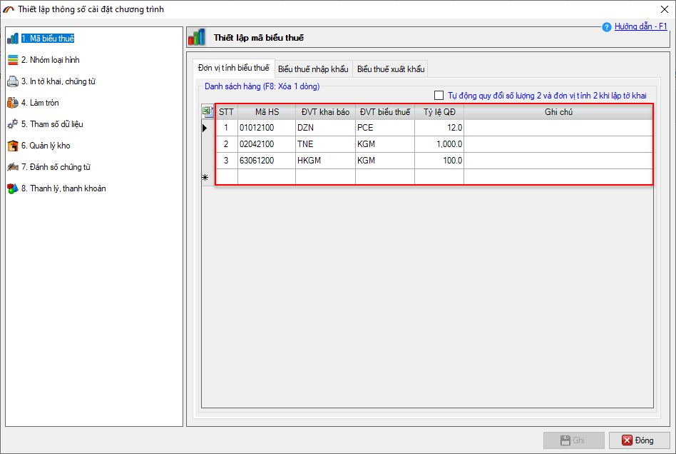
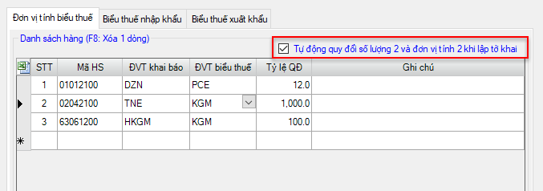
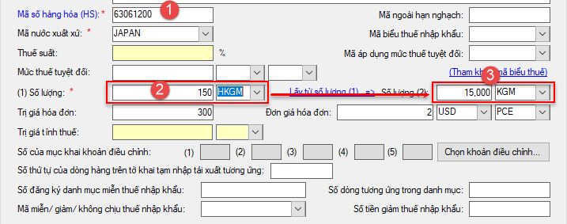
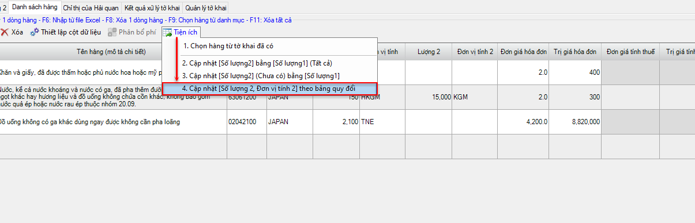
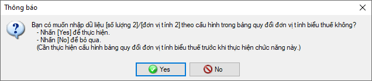
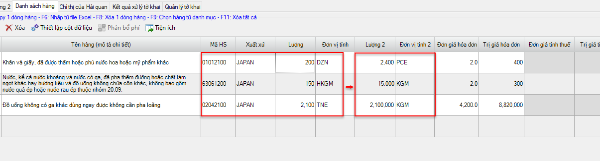
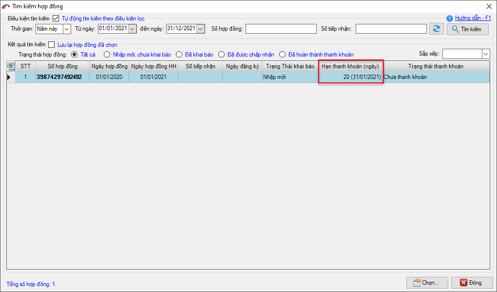
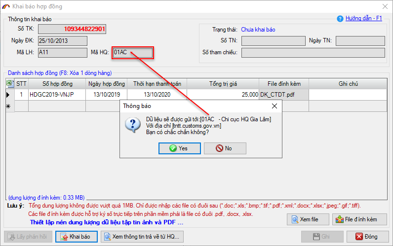
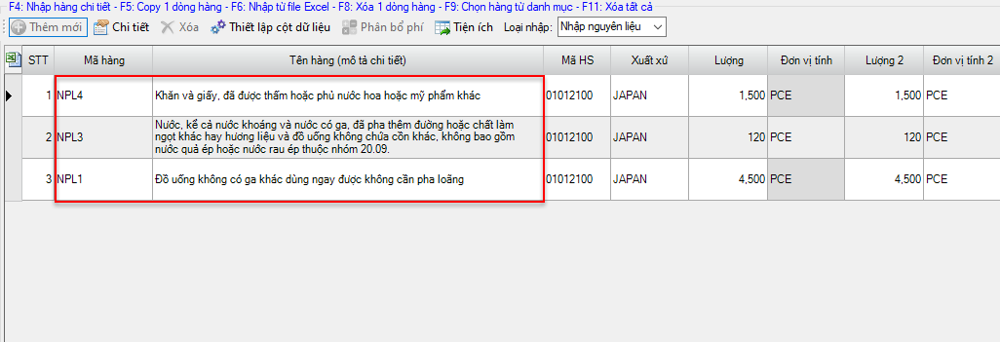
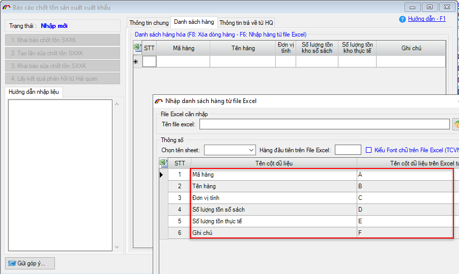

(Phiên bản update 03/01/2021)
Phần mềm ECUS5VNACCS2018 - Ngày phát hành 08/01/2021
Phiên bản cập nhật ngày 03/01/2021 được phát hành ngày 08/01/2021 bổ sung, sửa đổi các chức năng sau:
- 1. Bổ sung chức năng cấu hình bảng quy đổi đơn vị tính số lượng 2.
- Thiết lập bảng quy đổi ĐVT khai báo và ĐVT theo biểu thuế (hay còn gọi là ĐVT số lượng 2) cho các mã hàng hóa thường dùng.
- Phần mềm sẽ tự động tính và điền vào chỉ tiều Số lượng (2) và ĐVT số lượng (2) cho doanh nghiệp (nếu được thiết lập tự động)
- Cập nhật thủ công Số lượng (2) và ĐVT số lượng (2) cho toàn bộ hàng hóa theo bảng quy đổi (nếu quên hoặc chưa thiết lập tự động).
- a) Thiết lập bảng quy đổi đơn vị tính.
- b) Phần mềm sẽ tự động tính và điền vào Số lượng 2, ĐVT số lượng 2 sau khi người dùng nhập vào chỉ tiêu Số lượng, ĐVT số lượng 1.
- c) Cập nhật Số lượng 2, ĐVT số lượng 2 thủ công theo bảng quy đổi.
- d) Các tiện ích nhập Số lượng 2 (trong trường hợp chưa thiết lập bảng quy đổi)
- Cập nhật [Số lượng 2] bằng [Số lượng 1] (Tất cả): Bạn chọn lựa chọn này trong trường hợp muốn cập nhật Số lượng (2) của tất cả các dòng hàng trên tờ khai về giống với Số lượng (1).
- Cập nhật [Số lượng 2] (Chưa có) bằng [Số lượng 1]: Bạn chọn lựa chọn này trong trường hợp muốn cập nhật Số lượng (2) bằng Số lượng (1) cho các dòng hàng trên tờ khai có Số lượng (2) chưa được nhập. Các dòng hàng đã có dữ liệu Số lượng (2) sẽ không bị thay đổi.
- 2. Sửa lại cách tính cảnh báo thời hạn thanh khoản hợp đồng
- 3. Tự động lấy mã Hải quan khai báo chứng từ đính kèm theo mã Hải quan trên tờ khai
- 4. Sửa lỗi ghép mã hàng vào tên hàng trên tờ khai kinh doanh khi thực hiện IDB/EDB
- 5. Bổ sung danh sách cấu hình cột cho form nhập dữ liệu khai báo chốt tồn GC/SXXK
- 6. Và sửa lỗi, nâng cấp một số tính năng khác
- Bổ sung số lượng 2, đơn vị tính 2 vào báo cáo: Báo cáo tổng hàng hóa xuất nhập khẩu; Báo cáo chi tiết hàng hóa xuất nhập khẩu.
- Sửa lỗi đối với trường hợp doanh nghiệp mở tờ khai chuyển tiêu thụ nội địa từ nguồn tạm nhập (A21), đã thông quan nhưng trong báo cáo XNT Hàng hóa tờ khai tạm nhập/tái xuất lại không tính thêm số lượng loại hình tờ khai này, để trừ lùi đúng số lượng của doanh nghiệp.
- Sửa lỗi khi tìm tiêu chí số hợp đồng hoặc các tiêu chí khác trong danh sách lần khai báo sửa, hủy định mức GC/SXXK/CX không có nút tích Lọc hoặc tìm kiểm, để tìm kiếm ra điều kiện cần tìm.
- Sửa lỗi in phiếu XNK trong module Sổ quyết toán và Kế toán kho, bỏ số 0 vô nghĩa ở phần lẻ thập phân (lúc trước phần mềm hiển thị cố định 6 số lẻ thập phân)
- Sửa lỗi thiết lập cột hiển thị trên tờ khai xuất khẩu. Khi thiết lập cột hiển thị trên tờ khai xuất khẩu, người dùng đánh dấu chọn vào mục Áp dụng cho tất cả các tờ khai nhưng khi copy tờ khai thì phần mềm tự động bỏ phần tích chọn này đi trên tờ khai mới.
- Sửa lỗi khi thực hiện import từ excel chỉ tiêu trị giá và trị giá dự kiến trên tờ khai danh mục hàng miễn thuế TEA, mà trên file excel ô trị giá để USD 1234.45 thì import vào phần mềm sẽ nhảy = 0
- Ngày khai báo của TIA đang nhảy là ngày đăng ký tờ khai. Ví dụ: tờ khai tạm nhập đăng ký ngày 01/10/2020. Đến ngày 30/10/2020 DN có khai bổ sung TIA. Thì trên form danh sách tờ khai TIA, chỉ tiêu ngày khai báo phải thể hiện là 30/10/2020 nhưng phần mềm đang để là 01/10/2020
- Sửa lỗi phần khai báo sửa danh mục NPL, SP, định mức. Doanh nghiệp tự chuyển trạng thái thành chưa khai báo, thì trạng thái của NPL, sp, định mức trở về nhập mới. Sau đó Doanh nghiệp chuyển lại đã duyệt của lần khai báo sửa đó thì trạng thái NPL, SP, định mức phần mềm không chuyển đã duyệt lại. (Sxxk, chế xuất đều bị lỗi như trên)
- Sửa lỗi khi xem cân đối trước khi chạy thanh khoản, ra file excel thì cột đơn vị tính không có
Để thuận tiện cho các doanh nghiệp khi thực hiện nhập vào chỉ tiêu Số lượng (2), ĐVT số lượng (2) theo đúng hướng dẫn tại mục 1.83 và 1.84 phụ lục I TT 39/2018/TT-BTC đối với hàng hóa nhập khẩu và mục 2.72 và 2.73 phụ lục I thông tư 39/2018/TT-BTC đối với hàng hóa xuất khẩu. Phần mềm ECUS5VNACCS bổ sung chức năng cho phép doanh nghiệp:
Sau đây là phần hướng dẫn chi tiết:
Để thiết lập bảng quy đổi đơn vị tính cho các mã hàng hóa thường dùng để mở tờ khai, doanh nghiệp vào menu Hệ thống/Thiết lập tham số chương trình màn hình chức năng hiện ra bạn chọn vào mục 1.Mã biểu thuế:

Tại đây bạn chọn vào tab Đơn vị tính biểu thuế sau đó tiến hành nhập vào cụ thể như sau:
- Mã HS: Nhập vào mã số hàng hóa.
- ĐVT khai báo: Nhập vào ĐVT khai báo Hải quan thể hiện trên hóa đơn, hợp đồng....
- ĐVT biểu thuế: Nhập vào ĐVT chính xác của mã số hàng hóa này theo biểu thuế XNK.
- Tỷ lệ QĐ: Nhập vào tỷ lệ quy đổi giữa ĐVT khai báo và ĐVT biểu thuế, mục đích để phần mềm tự động tính Số lượng (2) tương ứng khi doanh nghiệp mở tờ khai. Ví dụ, ĐVT khai báo là TNE (Tấn), ĐVT biểu thuế là KGM (Kilogam) thì tỷ lệ quy đổi bạn nhập vào là 1000 (tức là 1 TNE = 1000 KGM).
Sau khi thiết lập xong danh sách bảng quy đổi nếu muốn phần mềm tự động quy đổi và điền vào Số lượng 2, ĐVT số lượng 2 sau khi đã nhập vào Số lượng và ĐVT số lượng. Bạn đánh dấu tích chọn vào mục như hình sau:

Sau khi đã thiết lập bảng quy đổi và đánh dấu vào lựa chọn tự động quy đổi, lúc bạn nhập dữ liệu cho danh sách hàng hóa tờ khai, phần mềm sẽ tự động tính và điền vào chỉ tiêu Số lượng 2, ĐVT số lượng 2. (Lưu ý: Bạn phải nhập chính xác mã HS và ĐVT khai báo như trong bảng quy đổi thì phần mềm mới tự động tính).
Ví dụ, với mã số hàng hóa là 63061200, ĐVT khai báo là HKGM (Tạ), Số lượng 1 là 150 thì phần mềm sẽ tự tính Số lượng 2 = 150 * 100 (100 là tỷ lệ quy đổi bạn đã thiết lập):

Trong trường hợp bạn đã thiết lập bảng quy đổi nhưng chưa đánh dấu tích chọn vào mục Tự động quy đỏi số lượng 2 và đơn vị tính 2 khi lập tờ khai. Sau khi nhập xong danh sách hàng hóa cho tờ khai, bạn nhấn vào mục Tiện tích sau đó chọn mục 4.Cập nhật [Số lượng 2, ĐVT số lượng 2] theo bảng quy đổi:

Phần mềm sẽ hiện thông báo để bạn xác nhận:

Kết quả là các dòng hàng có Mã HS và Số lượng 1, ĐVT số lượng 1 đã được thiết lập trong bảng quy đổi sẽ được phần mềm tự động tính và điền vào chỉ tiêu Số lượng 2, ĐVT số lượng 2:

Trong trường hợp chưa thiết lập bảng quy đổi, phần mềm cũng hỗ trợ doanh nghiệp một số cách để lấy nhanh Số lượng 2 (Doanh nghiệp phải tự nhập ĐVT số lượng 2).
Trong trường hợp Số lượng (1) và Số lượng (2) khác nhau, và chưa được thiết lập trong bảng quy đổi doanh nghiệp bắt buộc phải tự nhập Số lượng (2) bằng cách nhập thủ công hoặc nhập từ file excel.
Trường hợp Số lượng (1) và (2) là giống nhau thì khi nhập liệu doanh nghiệp nhập vào Số lượng (1) sau đó nhấn vào link "Lấy từ số lượng 1" để đưa vào Số lượng (2)

Hoặc khi nhập dữ liệu trên danh sách, bạn chỉ cần nhập vào Số lượng (1) sau đó cập nhật đồng loạt cho Số lượng (2) bằng cách nhấn vào nút Tiện ích và chọn 1 trong 2 lựa chọn sau:

Hiện nay phần mềm đang đưa ra cảnh báo thời hạn thanh khoản HĐGC là 45 ngày, kể từ ngày kết thúc hợp đồng. Điều này không đúng với quy định tại điều 64, Thông tư 39 "Chậm nhất 30 ngày kể từ ngày hợp đồng gia công kết thúc hoặc hết hiệu lực thực hiện, tổ chức, cá nhân phải hoàn thành việc thực hiện các thủ tục giải quyết nguyên liệu, vật tư dư thừa, phế liệu, phế phẩm, máy móc, thiết bị thuê, mượn và sản phẩm gia công theo quy định tại khoản 2 Điều này."
Như vậy theo cách tính mới thì Thời hạn thanh khoản = Ngày kết thúc HĐ + 30 ngày

Nâng cấp phần khai báo chứng từ đính kèm điện tử để phần mềm tự động lấy mã Hải quan khai báo chứng từ theo mã Hải quan trên tờ khai mà doanh nghiệp đang cần khai chứng từ đính kèm. Việc này giúp cho việc khai báo của các doanh nghiệp làm đại lý khai báo cho nhiều doanh nghiệp, tới nhiều chi cục Hải quan khác nhau (sẽ không phải thay đổi lại mã Hải quan trong phần thiết lập thông số khai báo).

Liên quan đến nhóm loại hình KD trên tờ khai, doanh nghiệp có nhập Mã Hàng trên tờ khai để quản lý. Khi khai báo bước IDA/EDA thì Tên hàng vẫn đúng (nhập sao thì vẫn đúng như vậy). Nhưng nếu gọi IDB/EDB về và khai báo lại bước IDA/EDA thì phần mềm tự động ghép mã hàng vào tên hàng (MAHANG#&TENHANG). Lỗi đã được khắc phục trong phiên bản update này.

Sửa lỗi nhập danh sách hàng cho khai báo chốt tồn GC/SXXK từ file excel không có các cột cấu hình.

Bản quyền © thuộc về Công ty TNHH Phát triển công nghệ Thái Sơn